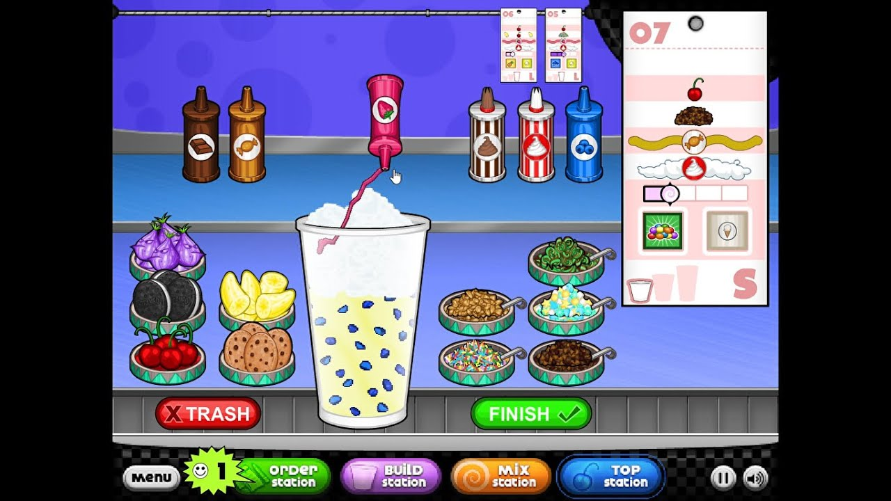

"To abandon an ice cream sundae in Death Valley is to: desert your dessert in the desert."
Why did the woman start her on ice cream business?
She liked working on sundaes!
Want to start your own sundae business? Want to see smiles on customers' faces after they've received delicious sundaes? Play Papa's Freezeria!
Game Features:
Hands-on ice cream shop in the Papa Louie universe.
Multi-tasking between building, mixing, and topping
85 customers (including Closers and Food Critics) to unlock with unique orders.
Unlock new mixables, toppings, and syrups.
Shop to buy upgrades using your in-game tips.
120 in-game achievements to earn.
The Order Station: This is the area where customers will show up and order their sundaes. By clicking on the waiting customers, you will take note of the toppings they want on their sundaes and how it should be mixed and built. Later, when you finish their order, you will return to the order station where customers will leave ratings and tips. Make sure to check this station regularly, as customers will come in while you are preparing orders. You may also decorate the lobby by manually placing items which the customers interact with.

The Build Station: This is the station where you start the customer's sundae order. Here, you will need to add mixables and syrups to the sundaes, with options for different sizes, mixables, and syrups. Choose the desired size, add in the desired mixables by completing a calibration, and add the syrup also by completing a calibration. Be sure to choose these by your customer's preferences! Cup sizes are: small, medium large. Mixables include: nutty butter cups, strawberries, cookie dough, creameo bits, marshmellows, pineapple, and Yum n' M's. The following syrups are available: chocolate syrup, vanilla syrup, strawberry syrup, mint syrup, banana syrup, and rainbow sherbet syrup.
The Mix Station: Customers would like their sundaes blended to different levels. At this station, you will blend the combined base, mixable, and syrup prepared in the previous station to the specific blend the customer chose (smooth, regular, or chunky). To mix, drag the sundae into one of the mixers and wait for the timer to reach the indicated time on the customer's order.
The Top Station: Here, you will add whipped creams, toppings, and additional topping syrups to the customer's order. Drag the items to place them evenly on the sundae according to the customer's order. Your sundae is finished! Just drag it along and the customer at the order station will leave a rating and a tip!
Customers: Customers are a valuable component to your business. Be sure to get their order as precise and quick as possible for them to leave a good rating and tip! If you do so, customers will become regulars and you will be able to unlock new customers that may tip more! Some customers are labelled as "Closers" or "Food Critics." "Closers" come at the end of the day with a challenging order, and "Food critics" never order the same order twice!